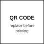

Want the full picture?
Scan the code or visit the link below to schedule a free strategy call with Clarion Solutions.
clarionsol.com/get-a-quote

Scan the code or visit the link below to schedule a free strategy call with Clarion Solutions.
clarionsol.com/get-a-quote